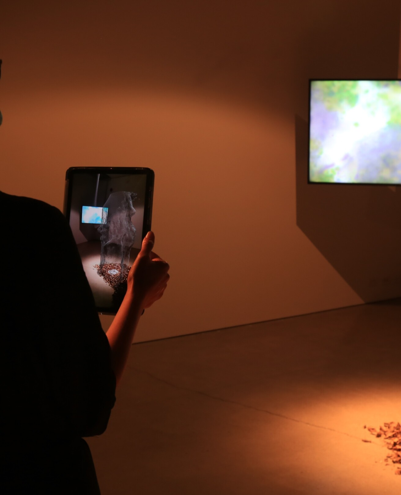
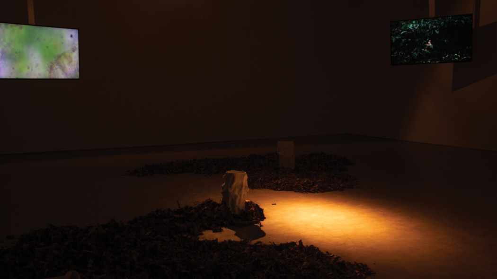

Finn Petrie is an interdisciplinary artist, musician, experimental game developer, and computer graphics and computer vision engineer from New Zealand. His work aims to foster and cultivate cognitive eco-systems. This includes establishing ontological connections between us and non-humans in his art, developing audience interactive performances as a musician, researching computer vision methods to help archeology become a non-invasive practice, and through implementing and researching emerging technologies to create mathematical puzzle games about perception and spatial intuition. He is concerned with how technology can allow us a greater sense of life and connection on and to this planet. He believes interdisciplinary work and collaboration at the interface of art and science is necessary to solve the hard-problems of the 21st century.
Art and Technology
Epiphytic Memory (Public Installation)
+ Click For More Info
Epiphytic Memory (Gallery Installation)
+ Click For More Info
The Ghosts of Future Trees (Work in Progress)
+ Click For More Info
Porcelain Clouds (Light + Clay Study)
+ Click For More Info
Retipora (A Network of Pores)
+ Click For More Info
Research and Professional Development
Mirrored (Real Time Ray-Tracing as a Game Mechanic)
Fig 1. Gallery View: Sculptures, clay 3D prints, epiphyte sites. Porcelain, paper clay. Variable dimensions
Epiphytic Memory is an ongoing project motivated by the symbiotic homing relations of plants. Light detection and ranging (LIDAR) scans of ancient trees from Aotearoa New Zealand’s southern rain-forests are 3D-printed in porcelain, and then situated in hybrid environments in Ōtepoti Dunedin as scientific interventions. These site-specific sculptures function both as memories and as potential bio-scaffolds for new life. The project uses augmented reality to help understand the depth of time involved within the work, through an interactive gallery installation that simulates plant growth. The work draws on N. Katherine Hayles' notions of the cognitive nonconscious and cognitive assemblages, to both understand the agency of plants, but also technology. The work intends to bring what Jakob von Uexuell describes as the Umwelten -- the ontological life world of a species -- closer to us through technology, allowing us to understand and form rich dialogues with plants through their growth and corresponding data.
Gallery Installation
Fig 2. Augmented reality was used to illustrate how time runs through the project. Audience members were invited to view a simulation of plant growth in AR, with varying and random durations of time, meaning each viewer experienced a different rate of change. The augmented reality experience allowed audience members to understand differences in speed between different organisms. In the context of the Anthropocene, varying rates of time are integral for us to understand if we wish to extend our time on this planet.

Fig 3. Augmented reality view. The model begins as a bio-scaffold, illustrating the current state of the printed objects.

Fig 4. Gallery view: leaf litter from the sites of public intervention were situated in the gallery with the 3D-prints. Videos that illustrate non-human communication hung from the ceiling like vines.
Fig 5. Gallery view: the installation in a brighter setting
Public Installation
Epiphytic Memory's public installation saw porcelain bio-scaffolds of LIDAR scanned ancient trees situated in urban and hybrid environments as scientific interventions. Here they function as memories of a pre-colonial Aotearoa, one ruled by trees, but they also function as homes for new life. The goal with the project is to sample the bioscaffolds within the next five years for lichen biodiversity, and then correlate the findings with the surrounding pollutant levels. Lichen biodiversity has been shown to correlate with pollutants as well as lung cancer (see Lichens, air pollution and lung cancer). In this way the project incorporates the interpretive practices of science --- or the action of giving a voice to non-humans through collecting their data --- to ultimately encourage local community reading of the sites’ growth in relation to this data.
Fig 6. Public installation view: bio-scaffolds of ancient trees were situated into urban, hybrid environments. Here the work is attached to an elm tree on Anzac Avenue, which was a site of study that attempted to correlate lichen bio-diversity with the pollutants of the avenue in the mid-1990s.Fig 7. Public installation view: bio-scaffolds of ancient trees were situated into urban, hybrid environments. The work appears like a hybrid animal architecture, or an alien fungus in the thicket of the forest floor in Ross Creek, Dunedin.Fig 8. Video still documenting plant-time and video documentation link. The work is situated on the banks of the Owheo river in Ross Creek.
Works located near architecture demonstrate the project's emphasis on connectivity between humans, technology, and plants. In some instances the forms are based on LIDAR scans of buildings digitally merged with the shapes of ancient trees. This performs a sort of co-becoming, a means for us to think through, and pay respect to, the constant yet slow push between plants and the built environment, as well as to speculate on a new architecture – one that not only welcomes plants, but sees them as necessary cohabitants. These works (see below) appear like tree-architectural hybrids, and often have unprintable parts left behind from the surface reconstruction algorithm used in merging the structures.
Fig 9. Example of the integration of architecture and plants in printed clay.
Retipora (A Network of Pores)
Fig 1. Retipora (A Network of Pores): Real time rendering. Single channel, HD. Pointcloud data, sound.
Motivated by the notion of material hermeneutics, what philosopher Don Ihde describes as the interpretative practices of scientific visualisation, Retipora (A Network of Pores) was an early experiment within my practice exploring shared existences, both between geologies and digital technologies, but also earthly bodies -- including oceanic speeds and geological time. A cloud of data-points visualising a rock-face within Ross Creek (Ōtepoti) is pushed through space and time – perhaps a thin film between worlds. The cloud appears to breathe as the 3-dimensional data shifts in and out, falling back to its original form only for a moment. The work metamorphoses the slowness of geological time into the continuity of constant flux and chaos of the ocean, bringing distant rates of time into contact. Exhibited at Aotearoa Digital Arts Symposium, 2021. Made in Unity using hlsl.
Porcelain Clouds
Fig 1. Top: Light through 3D-printed porcelain. Bottom: Jupiter captured by the Hubble Space Telescope. Credits: NASA, ESA, and A. Simon (NASA Goddard).
Porcelain clouds is a small-scale study, a shrine to the planets of our solar system. The work aims to capture the vector fields and flows of imaged planets in porcelain, a material that commonly signifies sacredness. When the small 3D-printed sculptures are hit by sunlight, the translucence of the porcelain flows appear like the surface of a gas giant, such as Jupiter. Materials: 3D-printed porcelain, sunlight.
Mirrored
Fig 1. Interactive video game, ray-tracing, Unreal Engine 5.
Mirrored is a magical realist puzzle game based around perception and the physics of light and influenced by the stories of Jorge Luis Borges and Italo Calvino. It is currently in early development through my startup, Retipora Studios. The world is architectural and geometric, a city of reflections, invisible light, and unknown physical laws. The player uses perception to progress through the world. Doors here will only open if they can be seen from certain vantages; creatures inhabiting the city will move if they are not seen by the eye; and certain architectural elements only exist behind glass, and must be brought forth for the player to advance. On a technical level, the game explores the use of real-time ray-tracing as a game-mechanic. Ray-tracing, an algorithm invented by painters in the 16th century to faithfully capture reality, allows a way to fully simulate Newtonian/geometric optics, where light is abstracted as straight lines. Due to the computational cost of this algorithm, it has historically been used for offline rendering as opposed to real-time/interactive computer graphics. While the visual fidelity ray-tracing offers is substantial, the extent to which it might extend the domain of play in interactive mediums is often not discussed. The game is currently in development with the help of funding from the Centre of Digital Excellence (CODE).
Games typically compute what has been seen by the player by checking what has not been culled from the frustrum culling process in Rasterisation
Figure 3. Frustrum culling: to discern what is visible to the player the CPU checks what objects are inside and outside the bounds of the player's view frustrum. The CPU then checks for occlusion, marking objects that are not occluded and within the view frustrum as visible. Credit: Real Time Rendering vol. 4, Fig. 19.09
However, this process does not work for ray-tracing, as some objects that may be rendered (say within reflections) could be outside the view volume. For example, parts of the world seen in the recursive mirror rendering in the figure below would be rendered by reflection rays, yet be considered occluded by frustrum culling
Figure 4. Visibility in ray-tracing: the recursive mirrors mean objects not directly in the player's view frustrum are rendered. This means frustrum culling can not be used to determine what is and is not visible to the player in ray-tracing.
To solve this issue, I have modified Unreal Engine 5. My modifications compute what has been rendered in ray-tracing on the GPU, and then this information is passed back to the CPU per frame. This means the CPU knows which objects have been seen by the player, allowing gameplay to be developed around what is visible. An example of this gameplay is illustrated in figure 5., where statues move when they are not seen by the player.
Figure 5. Detecting what has been rendered during ray-tracing: the statues only move if they have not been seen by the player.
The main game loop requires players use their spatial intution to place mirrors that allow them to see doors that only open when visible.
Figure 6. The gameplay is built around visibility and optics. Players have to place mirrors so that they can see the red door when they step on the red button.
As with reflective optics, there are also puzzles based around refraction. Here the player must identify anomalies within refractive glass -- such as missing architecture -- and bring these anomalies forward to their world, allowing them to progress. Narrative around this 'other world' is built up as the player progresses, and turns into an existential threat as architecture begins to fade from their present world.
Figure 7. Parts of the world are only visible through glass. The player must identify these elements so they can bring them forward. Here the player looks through a thin glass sphere and identifies the missing bridge.
The game world evokes Escherian recursion and Catalan architecture. It is also inspired by mythologies about spiders and trees creating the world. The player solves an environmental narrative where visual glyphs hint at the meaning of this place, but never directly signify, allowing them to uncover their own story.
Real-Time Ray-Tracing
Fig 1. Algebraic refractive and reflective quadric surfaces rendered with caustics using bi-directional path-tracing. (DX12, DXR, C++)
I conducted research into real-time ray-tracing for my honours dissertation (2020), which culminated in a peer-reviewed publication (Real-Time Ray-tracing of Implicit Surfaces), as well as building the foundations for me to develop my video game Mirrored, which applies this research to a video game (see Mirrored). I built a real-time bi-directional path-tracer in DXR and DX12 (Microsoft's GPU programming APIs), as well as an implementation of the paper Image Space Photon Mapping in modern hardware. I then conducted research into geometric representations on the GPU and analysed the speed of these representations compared to the hardware accelerated triangle mesh geometry. These geometries included algebraic, implicit and constructive solid geometry. Constructive solid geometry is typically implemented as a tree traversal. Recursive functions do not map well to GPUs because of the small stack sizes of each individual thread group, as well as the large cost of memory allocation. I devised an algorithm that pre-processed the CSG tree (see the figure below) into a post-order sorted list on the CPU, which the GPU could then process iteratively. As mentioned, this work ultimately led me to wonder how real-time ray-tracing could extend and compliment video game mechanics and gameplay, as I felt it was more than just at technology that could add visual fidelity, as commonly marketed. I received $34,000 NZD of funding from the New Zealand Centre of Digital Excellence toward developing Mirrored, which experiments with optical gameplay
Fig 2. Constructive Solid Geometry Tree of a mug. Geometries are subtracted, intersected, and added together to create the final objectFig 3. Illustration of global illumination in bi-directional path-tracing. Note how the light bounces onto the white cube, as well as the refracted caustic of the red glass sphere on the ground.Fig 4. Complex geometry was implemented within the ray-tracer. This figure shows a glass quaternion julia set, where the caustic is emphasised to illustrate the number of complex bounces involved in rendering such an object.
Modelling Stone Flakes
Fig 1. We want to make 3D models of flat objects, such as the stone flake
in this example. To do this we need to stitch together two half-models (top),
one captured from each side, to create a full 3D model (bottom).
During my undergraduate I helped develop and research methods to reconstruct objects that are traditionally hard to image using structure from motion under the supervision of Associate Professor, Steven Mills (University of Otago). The research was in the context of imaging debitage -- debris used in the analysis of stone tools by archeologists. The work led to a published peer reviewed paper (see Stitching Partial 3D-Models), and outlined proof of concept ground work that aided the project in getting a Marsden Fund from the New Zealand Royal Society Te Apārangi. The image below illustrates the observed error against the reconstructed models using my method - where blue is closer to the ground-truth. The aim is to make sure metric information is maintained when a real object is reconstructed, allowing for precise and relevant measurements. In general this research intends to allow archeologists a ‘non-invasive’ means to study archeological sites, where they no longer need to appropriate artifacts from a site, but instead can image them with a camera and perform analysis off-site. This is both practically and culturally significant, where archeologists can use less resources, but also can cause less physical and cultural damage to sites. The Māori (the indigenous peoples of Aotearoa New Zealand) word tapu expresses a forbiddenness/sacredness to and of certain procedures, objects, as well as events and life-stages. In this way the research will allow archeologists to be more cautious and respectful of other cultural world-views.
Fig 2. Heatmap measuring distance from reconstructions to ground-truth (laser scans of the stone flakes). Blue is closer to ground-truth.
Other Rooms (Bedroom Recorded Album)
Other Rooms is an experimental ambient album I recorded with my bandmate Liam Hayward in my room during the summer of 2017-2018. It features guitar, piano, violin, drums, and electronic elements. It also featured a collaboration with Japanese musician Motoko Kikkawa, and a guest apperance from folk singer, Holly McPhee. The album can be listened to below.
The following video, inspired by the abstract, early motion films of New Zealand artist Len Lye, was recorded and directed by me and Liam Hayward for the album's promotion.
Sine Rave -- Interactive Audio/Visual Performance
Sine Rave was a 12 hour festival during an autumn night in Dunedin. Audience members were invited to fall asleep to ambient, embodying music.
I wrote and performed a one hour piece (for cello and violin) with violinist Craig Monk (Dunedin Symphony Orchestra). The work had an interactive visual element, which invited audience members to control a shifting mass of points projected behind the performance. Audience members learnt to react to the music, extending the piece both collaboratively and cognitively.
Live Performance
I have been a professional musician since 2014. I have taught myself classical guitar technique, and the cello. My music builds layered walls of sound using multiple instrumental loops.
The video above is a live-to-air performance of my band Maryland - a two piece that comprises me, and my bandmate Liam Hayward on drums - at local Dunedin radio station, RadioOne. The video below is an early performance of Maryland in 2017.
My music was played in iD Fashion Week, Dunedin, 2017. Four early versions of my songs were played over the runway catwalk.
The Ghosts of Future Trees
Fig 1. Detail: Bioluminescent and translucent clay printed sculptures. Porcelain, arduino nano, CO2 sensors, blue LEDs. Variable dimensions
The ghosts of future trees is an extension to Epiphytic Memory, a foreboding speculation on our processes of making myth, and what our myths of the future might be in terms of our dying planet and our forgetting of extinct species. The work constructs and imagines a dystopian future where the course of western colonial techno-patriarchy has destroyed earth’s living ecosystems. In this troubled world, distraught spirits of bygone beings are left to roam a desecrated earth. These ephemeral forms are reduced and stunted, shifting in and out of various collapsed organic permutations as they reminisce and mourn the loss of physical life. Humans in an effort to commune with these spirits and their lost physical forms, have created structures in the image of the ghosts they see (or feeble impressions of them).
The work consists of 3D-printed, translucent porcelain trees – derived from photogrammetric scans of sites in the Catlins, one of New Zealand’s largest remaining rain forests. The trees are responsive to environmental phenomena, much like the trees we know, yet their response is incorrect. They bioluminescence as a function of CO2, and communicate over a mycorrhizal network of light: the internet. These reactive qualities demonstrate feeble simulacrum, a drifting away and forgetting of those trees we know currently. This project is currently in development. The images below show proof of concept works, where the CO2 response and communication between internet connected trees has yet to be implemented.
Fig 2. A porcelain sculpture situated in a branch at night time. It appears bioluminescent.Fig 3. Another view.Fig 4. Gallery view.


.JPG)